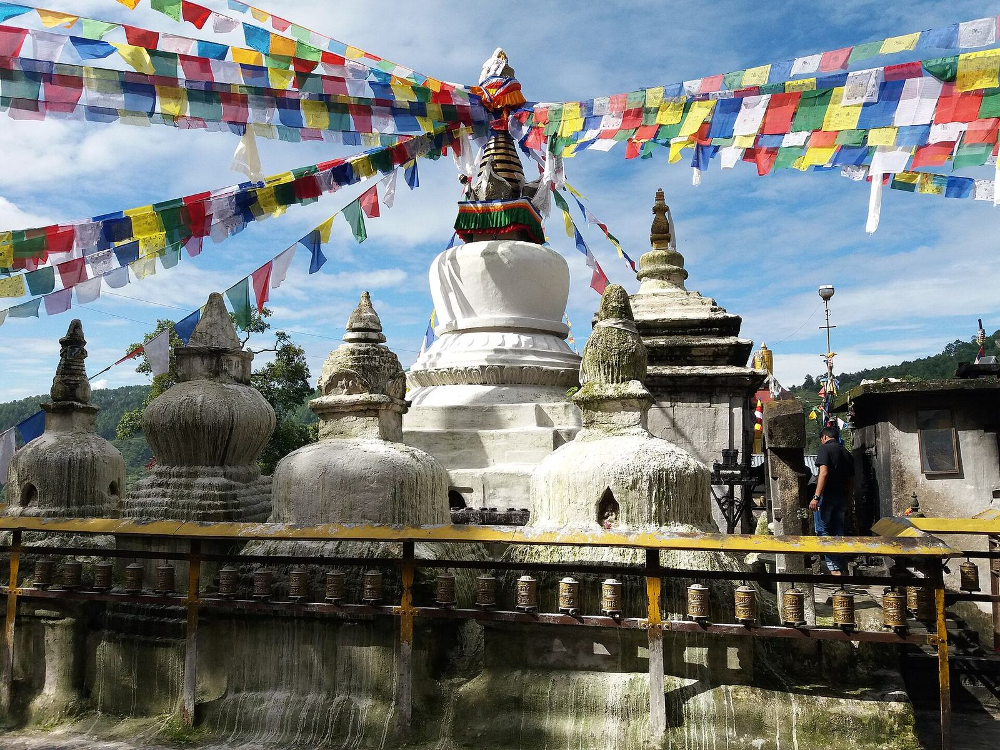
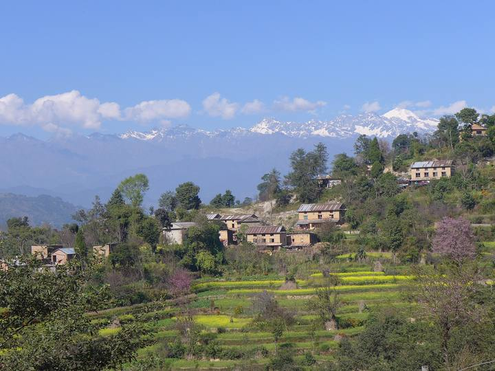
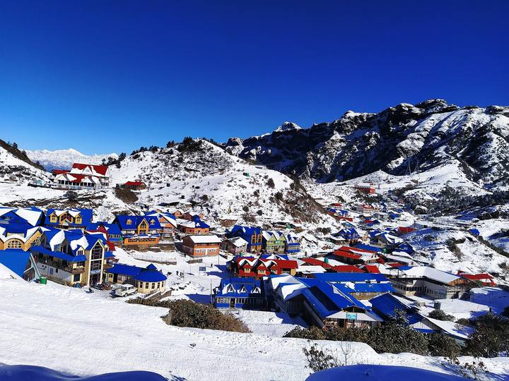

Nagarkot to Namobuddha
Three easy days east of Kathmandu: sunrise at Nagarkot, a ridge and village walk to Dhulikhel, then on to the stupa and monastery at Namobuddha and down to the old town of Panauti.


- Duration
- 2–4 days
- Distance
- 36 kmapproximate
- Highest point
- 2,175 mNagarkot View Tower · 7,136 ft
- Highest night
- 2,175 mNagarkot
- Difficulty
- EasyTeahouse lodges
- Best months
- Oct–Mar
Is this trek right for me?
The walking
3 days in all. Most walking days are 5 to 7 hours on foot, and the longest is about 7 hours. Short days below 3,500 m on good paths. Fine for a first trek.
The height
You never sleep above 2,175 m, so altitude is not a worry on this trek.
Where you sleep
In lodges every night: a simple twin room, a shared bathroom and hot meals in a warm dining room.
The help you need
A guide is optional here. Many people still take one for company, local knowledge and peace of mind.
Overview
This walk joins three places that most visitors reach by car. You are driven up to Nagarkot for the sunrise, walk south along the valley rim to the old Newar town of Dhulikhel, and go on the next day to Namobuddha, one of the main Buddhist pilgrimage sites near Kathmandu, before dropping to Panauti for the bus home. The highest ground is the Nagarkot view-tower hill at about 2,175 m, and every night is spent in a hotel.
It is country walking, not mountain trekking. The way follows dirt roads, village paths and stretches of pine forest through Tamang and Newar farmland, with the Banepa valley below you. From October to March a line of snow peaks fills the northern horizon: Ganesh Himal, Langtang Lirung, Dorje Lakpa and Gaurishankar, and from Nagarkot on the clearest mornings a far-off Everest. From April haze usually hides them, and the walk becomes one of villages, forest and temples.
The two walking days are not equal. Nagarkot to Dhulikhel takes five to seven hours and the route is unsigned, so allow time for wrong turns. The last day has two parts: three to four hours to Namobuddha, with a stiff climb up stone steps at the start, then two and a half to three hours down to Panauti. If that sounds long, stop at Namobuddha and leave by road, or sleep at the monastery guest house and walk down next morning. No permit is needed, and you are never far from a road.
Highlights
- Sunrise over the Himalaya from the Nagarkot ridge
- A day of ridge paths, pine forest and farm villages between Nagarkot and Dhulikhel
- Dhulikhel's old Newar quarter and the long flight of steps to its Kali temple
- The stupa at Namobuddha and the Thrangu Tashi Yangtse monastery above it
- Panauti's riverside temples at the end of the walk
- A hotel bed every night and no permit to arrange
Easy: Low altitude, a hotel bed each night and a road never far away; the only demands are two fairly long walking days and some route-finding on the first of them.
Altitude profile
Height at the end of each day, with the high points in between. Dots are the places you sleep.
Low altitude risk. You never sleep above 3,000 m on this itinerary, so altitude illness is unlikely. Mild headaches and breathlessness on the climbs are still normal.
Day by day
About 11–14 h of walking in total. Times are for a steady pace with short breaks; add more for photos and tea.
-
Day1
Drive to Nagarkot
Leave Kathmandu after lunch and you reach Nagarkot in time for the sunset. Most hotels sit well below the 2,175 m usually quoted for the village, which is the height of the view-tower hill to the south. Eat early and set an alarm: the dawn is why you are here.
36 places to stay in Nagarkot, such as New Elephant Head, Eco-Home and New Dragon. See them
Travel day- Sleep at
- 2,175 m
- Change
- +775 m
- Drive
- 2–3 h
-
Day2
Nagarkot to Dhulikhel
Nagarkot to Nagarkot View Tower to Dhulikhel
After sunrise, follow the ridge road south to the view tower and take the forest path down to the saddle of Rohini Bhanjyang. From there dirt roads and village paths lead through Kankre, Tanchok and Opi to the Araniko Highway just short of Dhulikhel. Ask the way in every village.
33 places to stay in Dhulikhel, such as Royal Guesthouse, Hotel Hills Heaven and Hotel mount prince. See them
- Sleep at
- 1,550 m
- Change
- −625 m
- Walking
- 5–7 h
- Distance
- 16 km
-
Day3
Dhulikhel to Namobuddha and Panauti, drive to Kathmandu
Dhulikhel to Dhulikhel Kali Temple to Kavre Bhanjyang to Namobuddha to Sankhu to Panauti
Climb the long flight of steps to the Kali temple, drop to the highway at Kavre Bhanjyang and follow a dirt road through Phulbari to Namobuddha, three to four hours in all. After the stupa and the monastery, walk down through Sankhu and Sunthan to Panauti in under three hours and take the bus to Kathmandu.
19 places to stay in Panauti, such as Ananda Café and Guesthouse, Namaste Samudai Home Stay and Hotel Panauti. See them
- Walk ends at
- 1,440 m
- Change
- −110 m
- High point
- 1,750 m
- Walking
- 6–7 h
- Distance
- 20 km
Ways to change it
End at Namobuddha
Stop at the stupa after three to four hours and return to Kathmandu by booked car, or by local bus to Banepa and a second bus from there. This halves the last day and suits anyone who found the day before long.
A night at Namobuddha
Stay in the monastery guest house or one of the small lodges near the stupa, hear the monks' morning prayers, and walk down to Panauti after breakfast. The trek becomes four days and the last two are both short.
By way of Balthali
From Namobuddha a path drops south-west to the farming village of Balthali in two to three hours. Sleep there in a small resort or homestay and walk out through Khopasi to Panauti the next morning.
Walk up to Nagarkot
Instead of driving, start on foot: about four hours uphill from the temple village of Changu Narayan, or two days along the rim from Sundarijal by way of Chisapani, which makes a four-day walk round the valley's northern and eastern edge.
Route map
The map loads when you scroll here. It needs a connection the first time; tiles you have viewed stay available offline.
The solid line follows footpaths mapped in OpenStreetMap. It is a guide to where the route goes, not a navigation track: trails are rerouted after landslides, so follow the signs and people on the ground. Marker positions come from OpenStreetMap where we could match a place, and from our own estimates elsewhere.
Download the trail for a map app A GPX file with 37 km of mapped path and every stop. It opens in free apps such as Organic Maps.
When to go
- January: best time
- February: best time
- March: best time
- April: good
- May: good
- June: difficult
- July: difficult
- August: difficult
- September: good
- October: best time
- November: best time
- December: best time
Come between October and March for the mountains. November to February has the sharpest dawns, with frost on the Nagarkot ridge. April and May are warm, hazy and hot on the open farmland by late morning. From June to September the dirt roads turn to mud, leeches are out in the forest sections, and cloud usually takes the place of the view.
Permits and guide rules
Guide optional. This walk lies outside the national parks and conservation areas. There is no permit and no checkpost, and nobody asks for a guide. One is still worth hiring for the Nagarkot to Dhulikhel day, where new dirt roads fork every few hundred metres and nothing is signed, and for anyone who would otherwise walk the quiet forest sections alone.
No trekking permit is needed for this route.
Getting there
Both ends are a short ride from Kathmandu. Nagarkot is about 32 km east of the city: an hour and a half to two hours by taxi, or up to three hours by local bus with a change in Bhaktapur. From Panauti, frequent buses run to Kathmandu by way of Banepa in about an hour and a half. Dhulikhel is on the Araniko Highway, with buses all day if you need to cut the walk short. Namobuddha has only a few buses, so most walkers who stop there book a car.
-
Bus: Kathmandu to Nagarkot · 2.5–3 h
Bus from the Ratna Park side of town to Bhaktapur, then the local bus up the hill from the Kamal Binayak stand.
-
Drive: Kathmandu to Nagarkot · 1.5–2 h
Taxi or hired car from Thamel. Agree the fare before you set off.
-
Bus: Panauti to Kathmandu · 1.5–2 h
Frequent buses from the Panauti bus park through Banepa to Ratna Park.
-
Drive: Namobuddha to Kathmandu · about 2 h
For those who skip the walk to Panauti. Book a car through your Dhulikhel hotel, or ask at the stupa when the next local bus leaves for Banepa.
-
Bus: Dhulikhel to Kathmandu · 1.5 h
Frequent buses along the Araniko Highway, if you stop after the first walking day.
Hazards on this route
Losing the way to Dhulikhel
Between the Nagarkot tower and Dhulikhel the route uses a web of dirt roads and footpaths that fork often and carry no signs, and new tracks are cut every year. A wrong turn can add an hour or two. Carry an offline map, keep working south and ask at every village.
Vehicles and dust
Much of the way is on dirt roads shared with buses, trucks and motorbikes, and the last stretch into Dhulikhel follows the Araniko Highway. Step off the road when a vehicle passes, walk facing the traffic on the highway, and carry a scarf or mask for the dust in the dry months.
Walking alone
The pine forest below the Nagarkot tower and the woods around Namobuddha are quiet, and robberies of lone hikers have been reported on the valley rim in past years. Incidents are rare. Walk with a companion or a guide, and be off the trail before dusk.
Heat and monsoon mud
From April the open farmland is hot by late morning, so start early and carry two litres of water. In the monsoon the clay roads are slick, the stone steps at Dhulikhel are slippery and leeches wait in the forest.
Practical tips
- Nagarkot and Dhulikhel fill with weekenders from Kathmandu. Walk midweek, or book both hotels ahead for a Friday or Saturday night.
- Ask your Nagarkot hotel for a packed lunch. Tea shops between the tower and Dhulikhel are few and keep irregular hours.
- Leave your main bag in Kathmandu. With a hotel every night you need only a day pack with a warm layer and a head torch for the dawn.
- At Namobuddha, walk clockwise round the stupa, dress modestly in the monastery and ask before photographing monks or shrine rooms.
- Dhulikhel and Panauti have cash machines. Carry small notes for tea shops, buses and temple donations.
- December and January dawns at Nagarkot are near freezing, and many hotel rooms are unheated. Bring a warm jacket, hat and gloves.
Cash machines on the route: Dhulikhel, Panauti. They run out of cash and go offline, so carry what you need from Kathmandu. Work out how much.
Plan this trek
Choose your dates and see the whole trip on one page: where you sleep each night, who can help you, what it may cost and the papers you need. Then ask for a price.
More tools for this trek
Who can help you on this trek
A guide is optional here. Many people still take one for company, local knowledge and peace of mind.
-
A trekking company that arranges everythingOne price for everything on the trek. Ask two or three companies.
-
A guide, and a porter to carry your bagAbout USD 25 to 40 a day for the guide and USD 18 to 25 for the porter.
-
A guideAbout USD 25 to 40 a day.
-
A porter to carry your bagAbout USD 18 to 25 a day.
-
On your ownNo daily cost, and nobody to turn to if something goes wrong.
Do you work on the Nagarkot to Namobuddha route as a guide, porter or company? Join TrekkSewa.
Quick answers
How long does the Nagarkot to Namobuddha trek take?
Most people take 2–4 days. The itinerary on this page is 3 days.
How high does the Nagarkot to Namobuddha trek go?
The highest point is Nagarkot View Tower at 2,175 m (7,136 ft). The highest place you sleep is Nagarkot at 2,175 m.
How difficult is it?
We grade it easy. Low altitude, a hotel bed each night and a road never far away; the only demands are two fairly long walking days and some route-finding on the first of them.
Which permits do I need?
No trekking permit is needed for this route.
Do I need a guide?
This walk lies outside the national parks and conservation areas. There is no permit and no checkpost, and nobody asks for a guide. One is still worth hiring for the Nagarkot to Dhulikhel day, where new dirt roads fork every few hundred metres and nothing is signed, and for anyone who would otherwise walk the quiet forest sections alone.
When is the best time to go?
Oct–Mar are best. Come between October and March for the mountains. November to February has the sharpest dawns, with frost on the Nagarkot ridge. April and May are warm, hazy and hot on the open farmland by late morning. From June to September the dirt roads turn to mud, leeches are out in the forest sections, and cloud usually takes the place of the view.
Stage plans on this route vary between operators; treat distances and times as approximate. Reviewed 2026-11. Trails, lodges and rules change; confirm locally before you rely on any detail. Report a correction.
Similar treks
More in Kathmandu Valley
Kathmandu ValleyChisapani to Nagarkot
Three days along the valley rim, from Shivapuri forest to a sunrise ridge
 Langtang
Langtang
Ama Yangri
Three days to a sacred 3,771 m summit above Helambu's largest village

RolwalingKalinchowk
A short, steep climb from Charikot to a hilltop shrine at about 3,800 m